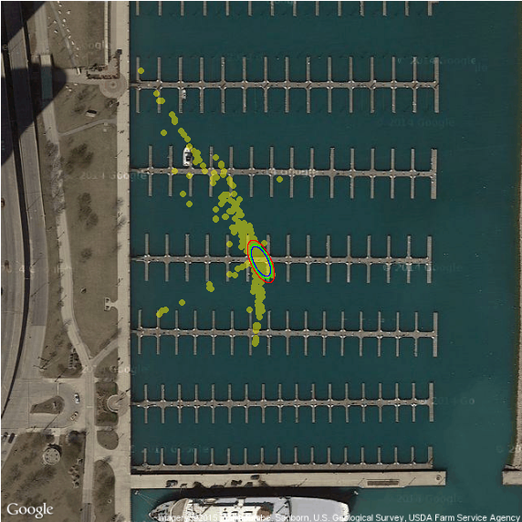
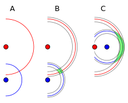
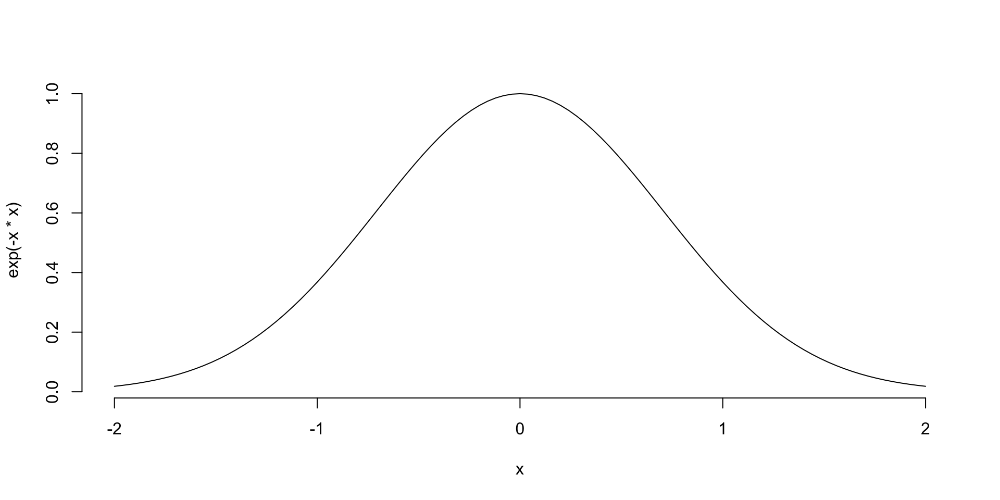
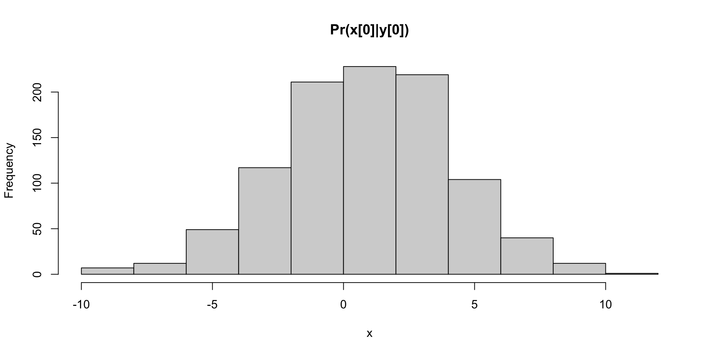
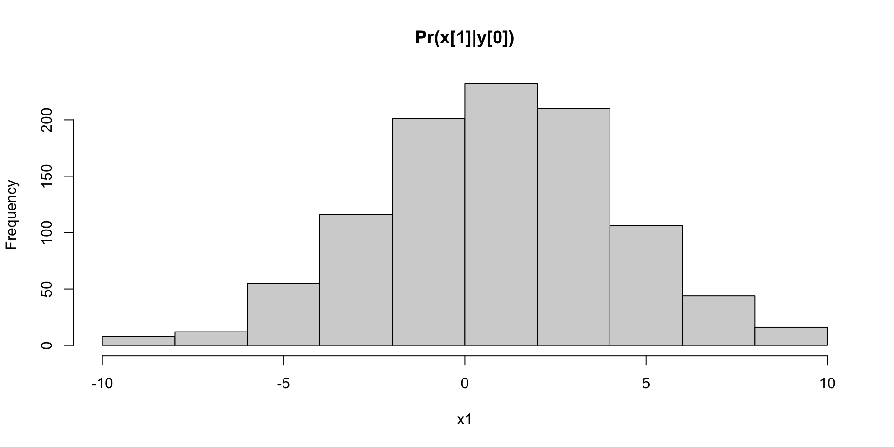
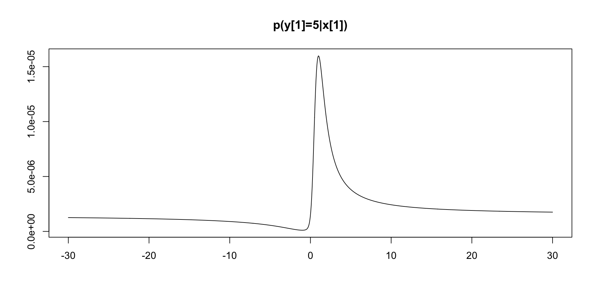
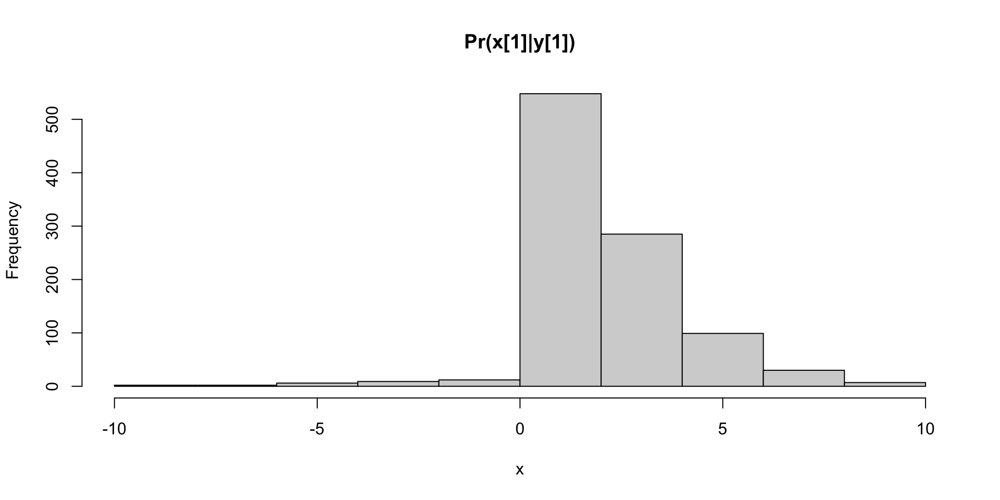
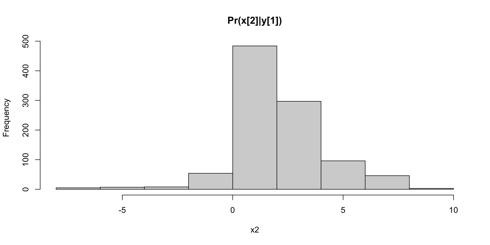
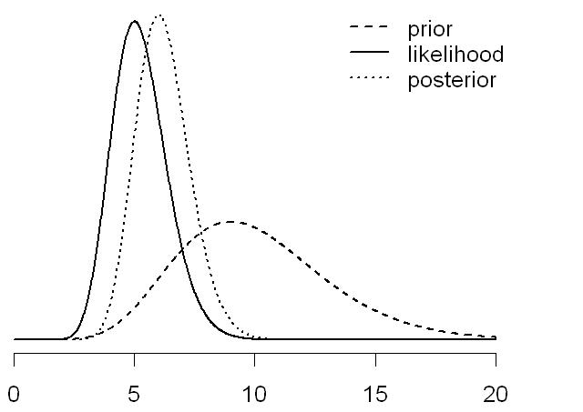
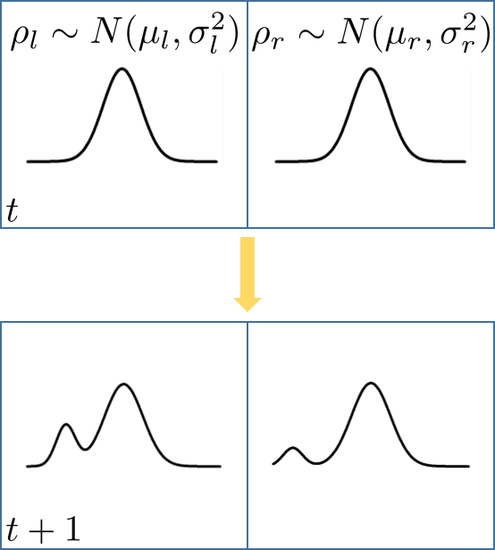

Bodyfat Abdomen
1 12.3 85.2
2 6.1 83.0
3 25.3 87.9
4 10.4 86.4
5 28.7 100.0Unit 5: Bayesian Regression: Linear and Bayesian Trees
Vadim Sokolov
George Mason University
Spring 2025
\[ y_i \sim D(f(\eta_i),\theta) \]
We assume a linear relationship between \(x\) and \(y\):
\[ y_i = \beta_0 + \beta_1x_{i1} + \beta_2x_{i2} + \ldots + \beta_px_{ip} + \epsilon_i \]
In matrix form: \(y = X\beta + \epsilon\)
Bayes’ Theorem tells us how to update our beliefs:
\[ P(\theta | Data) = [ P(Data | \theta)P(\theta) ] / P(Data) \]
Applying Bayes’ Theorem:
\[ P(\beta, \sigma^2 | Data) \propto P(Data | \beta, \sigma^2)P(\beta)P(\sigma^2) \]
The posterior is proportional to the product of the likelihood and the priors.
Crucially: For certain choices of priors (like the Normal prior for \(\beta\) and Inverse Gamma for \(\sigma^2\)), the posterior has a known form (conjugate priors). This makes calculations easier. In other cases, we use approximation techniques.
We use the posterior predictive distribution: \(P(y^* | x^*, Data)\)
This distribution integrates over the posterior distribution of the parameters:
\[ P(y^* | x^*, Data) = ∫ P(y^* | x^*, \beta, \sigma^2)P(\beta, \sigma^2 | Data) d\beta d\sigma^2 \]
This gives us a distribution over possible values of \(y^*\), not just a single point estimate. This captures the uncertainty in our prediction.
\[ y_i = \alpha + \beta x_i + \epsilon_i, \quad i = 1,\cdots, 252. \]
Call:
lm(formula = Bodyfat ~ Abdomen, data = bodyfat)
Residuals:
Min 1Q Median 3Q Max
-19.0160 -3.7557 0.0554 3.4215 12.9007
Coefficients:
Estimate Std. Error t value Pr(>|t|)
(Intercept) -39.28018 2.66034 -14.77 <2e-16 ***
Abdomen 0.63130 0.02855 22.11 <2e-16 ***
---
Signif. codes: 0 '***' 0.001 '**' 0.01 '*' 0.05 '.' 0.1 ' ' 1
Residual standard error: 4.877 on 250 degrees of freedom
Multiple R-squared: 0.6617, Adjusted R-squared: 0.6603
F-statistic: 488.9 on 1 and 250 DF, p-value: < 2.2e-16Likelihood: \[ Y_i~|~x_i, \alpha, \beta,\sigma^2~ \sim~ \textsf{Normal}(\alpha + \beta x_i, \sigma^2),\qquad i = 1,\cdots, n. \] Priors: \[ p(\alpha,\beta \mid \sigma^2) \propto 1, \quad p(\sigma^2) \propto 1/\sigma^2. \] Posterior: \[ \beta~|~y_1,\cdots,y_n ~\sim~ \textsf{t}\left(n-2,\ \hat{\beta},\ \frac{\hat{\sigma}^2}{\text{S}_{xx}}\right) = \textsf{t}\left(n-2,\ \hat{\beta},\ (\text{se}_{\beta})^2\right) \] \(\hat{\beta}\) and \(\hat{\beta},\ (\text{se}_{\beta})^2\) are MLE estimates! For derivation, see Section 6.1.4 of An Introduction to Bayesian Thinking
The Bayesian posterior credible intervals for \(\alpha\) and \(\beta\) under the reference prior, are numerically equivalent to the confidence intervals from the classical frequentist OLS analysis!
ind = order(bodyfat$Abdomen)
x = bodyfat$Abdomen[ind]
df = data.frame(Abdomen = x)
ymean = predict(bodyfat.lm, newdata = df, interval = "confidence")
ypred = predict(bodyfat.lm, newdata = df, interval = "prediction")
plot(bodyfat$Abdomen, bodyfat$Bodyfat, pch=16)
lines(x, ymean[,1], col="red", lwd=3)
lines(x, ymean[,2], col="grey", lty=2)
lines(x, ymean[,3], col="grey", lty=2)
lines(x, ypred[,2], col="blue", lty=2)
lines(x, ypred[,3], col="blue", lty=2)
labels = c("Data", "Mean", "Confidence", "Prediction")
legend("topleft", legend = labels, col = c("black", "red", "grey", "blue"), lty = c(NA, 1, 2, 2), lwd = c(NA, 3, 1, 1))library(brms)
priors <- c(
prior(normal(0, 10), class = "b"), # Prior for coefficients (slope)
prior(normal(0, 25), class = "Intercept"), # Prior for the intercept
prior(student_t(3, 0, 100), class = "sigma") # Prior for the residual standard deviation
)
bodyfat.brms = brm(Bodyfat ~ Abdomen, data = bodyfat,family = gaussian(),prior = priors)
SAMPLING FOR MODEL 'anon_model' NOW (CHAIN 1).
Chain 1:
Chain 1: Gradient evaluation took 3.7e-05 seconds
Chain 1: 1000 transitions using 10 leapfrog steps per transition would take 0.37 seconds.
Chain 1: Adjust your expectations accordingly!
Chain 1:
Chain 1:
Chain 1: Iteration: 1 / 2000 [ 0%] (Warmup)
Chain 1: Iteration: 200 / 2000 [ 10%] (Warmup)
Chain 1: Iteration: 400 / 2000 [ 20%] (Warmup)
Chain 1: Iteration: 600 / 2000 [ 30%] (Warmup)
Chain 1: Iteration: 800 / 2000 [ 40%] (Warmup)
Chain 1: Iteration: 1000 / 2000 [ 50%] (Warmup)
Chain 1: Iteration: 1001 / 2000 [ 50%] (Sampling)
Chain 1: Iteration: 1200 / 2000 [ 60%] (Sampling)
Chain 1: Iteration: 1400 / 2000 [ 70%] (Sampling)
Chain 1: Iteration: 1600 / 2000 [ 80%] (Sampling)
Chain 1: Iteration: 1800 / 2000 [ 90%] (Sampling)
Chain 1: Iteration: 2000 / 2000 [100%] (Sampling)
Chain 1:
Chain 1: Elapsed Time: 0.014 seconds (Warm-up)
Chain 1: 0.013 seconds (Sampling)
Chain 1: 0.027 seconds (Total)
Chain 1:
SAMPLING FOR MODEL 'anon_model' NOW (CHAIN 2).
Chain 2:
Chain 2: Gradient evaluation took 5e-06 seconds
Chain 2: 1000 transitions using 10 leapfrog steps per transition would take 0.05 seconds.
Chain 2: Adjust your expectations accordingly!
Chain 2:
Chain 2:
Chain 2: Iteration: 1 / 2000 [ 0%] (Warmup)
Chain 2: Iteration: 200 / 2000 [ 10%] (Warmup)
Chain 2: Iteration: 400 / 2000 [ 20%] (Warmup)
Chain 2: Iteration: 600 / 2000 [ 30%] (Warmup)
Chain 2: Iteration: 800 / 2000 [ 40%] (Warmup)
Chain 2: Iteration: 1000 / 2000 [ 50%] (Warmup)
Chain 2: Iteration: 1001 / 2000 [ 50%] (Sampling)
Chain 2: Iteration: 1200 / 2000 [ 60%] (Sampling)
Chain 2: Iteration: 1400 / 2000 [ 70%] (Sampling)
Chain 2: Iteration: 1600 / 2000 [ 80%] (Sampling)
Chain 2: Iteration: 1800 / 2000 [ 90%] (Sampling)
Chain 2: Iteration: 2000 / 2000 [100%] (Sampling)
Chain 2:
Chain 2: Elapsed Time: 0.016 seconds (Warm-up)
Chain 2: 0.013 seconds (Sampling)
Chain 2: 0.029 seconds (Total)
Chain 2:
SAMPLING FOR MODEL 'anon_model' NOW (CHAIN 3).
Chain 3:
Chain 3: Gradient evaluation took 3e-06 seconds
Chain 3: 1000 transitions using 10 leapfrog steps per transition would take 0.03 seconds.
Chain 3: Adjust your expectations accordingly!
Chain 3:
Chain 3:
Chain 3: Iteration: 1 / 2000 [ 0%] (Warmup)
Chain 3: Iteration: 200 / 2000 [ 10%] (Warmup)
Chain 3: Iteration: 400 / 2000 [ 20%] (Warmup)
Chain 3: Iteration: 600 / 2000 [ 30%] (Warmup)
Chain 3: Iteration: 800 / 2000 [ 40%] (Warmup)
Chain 3: Iteration: 1000 / 2000 [ 50%] (Warmup)
Chain 3: Iteration: 1001 / 2000 [ 50%] (Sampling)
Chain 3: Iteration: 1200 / 2000 [ 60%] (Sampling)
Chain 3: Iteration: 1400 / 2000 [ 70%] (Sampling)
Chain 3: Iteration: 1600 / 2000 [ 80%] (Sampling)
Chain 3: Iteration: 1800 / 2000 [ 90%] (Sampling)
Chain 3: Iteration: 2000 / 2000 [100%] (Sampling)
Chain 3:
Chain 3: Elapsed Time: 0.017 seconds (Warm-up)
Chain 3: 0.012 seconds (Sampling)
Chain 3: 0.029 seconds (Total)
Chain 3:
SAMPLING FOR MODEL 'anon_model' NOW (CHAIN 4).
Chain 4:
Chain 4: Gradient evaluation took 2e-06 seconds
Chain 4: 1000 transitions using 10 leapfrog steps per transition would take 0.02 seconds.
Chain 4: Adjust your expectations accordingly!
Chain 4:
Chain 4:
Chain 4: Iteration: 1 / 2000 [ 0%] (Warmup)
Chain 4: Iteration: 200 / 2000 [ 10%] (Warmup)
Chain 4: Iteration: 400 / 2000 [ 20%] (Warmup)
Chain 4: Iteration: 600 / 2000 [ 30%] (Warmup)
Chain 4: Iteration: 800 / 2000 [ 40%] (Warmup)
Chain 4: Iteration: 1000 / 2000 [ 50%] (Warmup)
Chain 4: Iteration: 1001 / 2000 [ 50%] (Sampling)
Chain 4: Iteration: 1200 / 2000 [ 60%] (Sampling)
Chain 4: Iteration: 1400 / 2000 [ 70%] (Sampling)
Chain 4: Iteration: 1600 / 2000 [ 80%] (Sampling)
Chain 4: Iteration: 1800 / 2000 [ 90%] (Sampling)
Chain 4: Iteration: 2000 / 2000 [100%] (Sampling)
Chain 4:
Chain 4: Elapsed Time: 0.019 seconds (Warm-up)
Chain 4: 0.013 seconds (Sampling)
Chain 4: 0.032 seconds (Total)
Chain 4: Family: gaussian
Links: mu = identity; sigma = identity
Formula: Bodyfat ~ Abdomen
Data: bodyfat (Number of observations: 252)
Draws: 4 chains, each with iter = 2000; warmup = 1000; thin = 1;
total post-warmup draws = 4000
Regression Coefficients:
Estimate Est.Error l-95% CI u-95% CI Rhat Bulk_ESS Tail_ESS
Intercept -39.30 2.67 -44.47 -33.94 1.00 4061 2807
Abdomen 0.63 0.03 0.57 0.69 1.00 4082 3052
Further Distributional Parameters:
Estimate Est.Error l-95% CI u-95% CI Rhat Bulk_ESS Tail_ESS
sigma 4.90 0.22 4.48 5.36 1.00 3732 2907
Draws were sampled using sampling(NUTS). For each parameter, Bulk_ESS
and Tail_ESS are effective sample size measures, and Rhat is the potential
scale reduction factor on split chains (at convergence, Rhat = 1).new_data = data.frame(Abdomen = x)
predictions = posterior_predict(bodyfat.brms, newdata = new_data)
quntiles = apply(predictions, 2, function(x) quantile(x, c(0.025, 0.5,0.975)))
plot(bodyfat$Abdomen, bodyfat$Bodyfat, pch=16)
lines(x, quntiles[1,], col = "blue", lty = 2)
lines(x, quntiles[3,], col = "blue", lty = 2)
lines(x, quntiles[2,], col = "red", lwd = 3)set.seed(7)
true_intercept <- 5
true_slope <- 2
true_sigma <- 3
# Number of data points (intentionally small)
n_data <- 15
# Generate predictor (x)
x <- runif(n_data, min = -5, max = 5)
# Generate outcome (y) with noise
y <- true_intercept + true_slope * x + rnorm(n_data, mean = 0, sd = true_sigma)
# Combine into a data frame
sim_data <- data.frame(x = x, y = y)
plot(x, y, pch = 16)
Call:
lm(formula = y ~ x, data = sim_data)
Residuals:
Min 1Q Median 3Q Max
-6.0837 -1.5346 -0.8869 1.9904 4.4709
Coefficients:
Estimate Std. Error t value Pr(>|t|)
(Intercept) 3.5984 0.7468 4.818 0.000336 ***
x 1.6563 0.2350 7.047 8.71e-06 ***
---
Signif. codes: 0 '***' 0.001 '**' 0.01 '*' 0.05 '.' 0.1 ' ' 1
Residual standard error: 2.795 on 13 degrees of freedom
Multiple R-squared: 0.7925, Adjusted R-squared: 0.7766
F-statistic: 49.66 on 1 and 13 DF, p-value: 8.712e-06x_vals <- seq(min(sim_data$x), max(sim_data$x), length.out = 100)
# Get OLS predictions
ols_predictions <- predict(ols_model, newdata = data.frame(x = x_vals), interval = "confidence")
ols_predictions <- as.data.frame(ols_predictions) # Convert to data frame
ols_predictions$x <- x_vals
plot(x, y, pch = 16)
lines(x_vals,ols_predictions$fit)priors <- c(
prior(normal(5, 1), class = "Intercept"), # Prior for intercept
prior(normal(2, 1), class = "b"), # Prior for slope
prior(student_t(3, 0, 5), class = "sigma") # Prior for sigma (wider than the true value)
)
# Fit the Bayesian model using brms
bayes_model <- brm(y ~ x,data = sim_data,family = gaussian(),prior = priors,seed = 123)
SAMPLING FOR MODEL 'anon_model' NOW (CHAIN 1).
Chain 1:
Chain 1: Gradient evaluation took 3.5e-05 seconds
Chain 1: 1000 transitions using 10 leapfrog steps per transition would take 0.35 seconds.
Chain 1: Adjust your expectations accordingly!
Chain 1:
Chain 1:
Chain 1: Iteration: 1 / 2000 [ 0%] (Warmup)
Chain 1: Iteration: 200 / 2000 [ 10%] (Warmup)
Chain 1: Iteration: 400 / 2000 [ 20%] (Warmup)
Chain 1: Iteration: 600 / 2000 [ 30%] (Warmup)
Chain 1: Iteration: 800 / 2000 [ 40%] (Warmup)
Chain 1: Iteration: 1000 / 2000 [ 50%] (Warmup)
Chain 1: Iteration: 1001 / 2000 [ 50%] (Sampling)
Chain 1: Iteration: 1200 / 2000 [ 60%] (Sampling)
Chain 1: Iteration: 1400 / 2000 [ 70%] (Sampling)
Chain 1: Iteration: 1600 / 2000 [ 80%] (Sampling)
Chain 1: Iteration: 1800 / 2000 [ 90%] (Sampling)
Chain 1: Iteration: 2000 / 2000 [100%] (Sampling)
Chain 1:
Chain 1: Elapsed Time: 0.013 seconds (Warm-up)
Chain 1: 0.01 seconds (Sampling)
Chain 1: 0.023 seconds (Total)
Chain 1:
SAMPLING FOR MODEL 'anon_model' NOW (CHAIN 2).
Chain 2:
Chain 2: Gradient evaluation took 1e-06 seconds
Chain 2: 1000 transitions using 10 leapfrog steps per transition would take 0.01 seconds.
Chain 2: Adjust your expectations accordingly!
Chain 2:
Chain 2:
Chain 2: Iteration: 1 / 2000 [ 0%] (Warmup)
Chain 2: Iteration: 200 / 2000 [ 10%] (Warmup)
Chain 2: Iteration: 400 / 2000 [ 20%] (Warmup)
Chain 2: Iteration: 600 / 2000 [ 30%] (Warmup)
Chain 2: Iteration: 800 / 2000 [ 40%] (Warmup)
Chain 2: Iteration: 1000 / 2000 [ 50%] (Warmup)
Chain 2: Iteration: 1001 / 2000 [ 50%] (Sampling)
Chain 2: Iteration: 1200 / 2000 [ 60%] (Sampling)
Chain 2: Iteration: 1400 / 2000 [ 70%] (Sampling)
Chain 2: Iteration: 1600 / 2000 [ 80%] (Sampling)
Chain 2: Iteration: 1800 / 2000 [ 90%] (Sampling)
Chain 2: Iteration: 2000 / 2000 [100%] (Sampling)
Chain 2:
Chain 2: Elapsed Time: 0.013 seconds (Warm-up)
Chain 2: 0.011 seconds (Sampling)
Chain 2: 0.024 seconds (Total)
Chain 2:
SAMPLING FOR MODEL 'anon_model' NOW (CHAIN 3).
Chain 3:
Chain 3: Gradient evaluation took 1e-06 seconds
Chain 3: 1000 transitions using 10 leapfrog steps per transition would take 0.01 seconds.
Chain 3: Adjust your expectations accordingly!
Chain 3:
Chain 3:
Chain 3: Iteration: 1 / 2000 [ 0%] (Warmup)
Chain 3: Iteration: 200 / 2000 [ 10%] (Warmup)
Chain 3: Iteration: 400 / 2000 [ 20%] (Warmup)
Chain 3: Iteration: 600 / 2000 [ 30%] (Warmup)
Chain 3: Iteration: 800 / 2000 [ 40%] (Warmup)
Chain 3: Iteration: 1000 / 2000 [ 50%] (Warmup)
Chain 3: Iteration: 1001 / 2000 [ 50%] (Sampling)
Chain 3: Iteration: 1200 / 2000 [ 60%] (Sampling)
Chain 3: Iteration: 1400 / 2000 [ 70%] (Sampling)
Chain 3: Iteration: 1600 / 2000 [ 80%] (Sampling)
Chain 3: Iteration: 1800 / 2000 [ 90%] (Sampling)
Chain 3: Iteration: 2000 / 2000 [100%] (Sampling)
Chain 3:
Chain 3: Elapsed Time: 0.013 seconds (Warm-up)
Chain 3: 0.011 seconds (Sampling)
Chain 3: 0.024 seconds (Total)
Chain 3:
SAMPLING FOR MODEL 'anon_model' NOW (CHAIN 4).
Chain 4:
Chain 4: Gradient evaluation took 1e-06 seconds
Chain 4: 1000 transitions using 10 leapfrog steps per transition would take 0.01 seconds.
Chain 4: Adjust your expectations accordingly!
Chain 4:
Chain 4:
Chain 4: Iteration: 1 / 2000 [ 0%] (Warmup)
Chain 4: Iteration: 200 / 2000 [ 10%] (Warmup)
Chain 4: Iteration: 400 / 2000 [ 20%] (Warmup)
Chain 4: Iteration: 600 / 2000 [ 30%] (Warmup)
Chain 4: Iteration: 800 / 2000 [ 40%] (Warmup)
Chain 4: Iteration: 1000 / 2000 [ 50%] (Warmup)
Chain 4: Iteration: 1001 / 2000 [ 50%] (Sampling)
Chain 4: Iteration: 1200 / 2000 [ 60%] (Sampling)
Chain 4: Iteration: 1400 / 2000 [ 70%] (Sampling)
Chain 4: Iteration: 1600 / 2000 [ 80%] (Sampling)
Chain 4: Iteration: 1800 / 2000 [ 90%] (Sampling)
Chain 4: Iteration: 2000 / 2000 [100%] (Sampling)
Chain 4:
Chain 4: Elapsed Time: 0.014 seconds (Warm-up)
Chain 4: 0.01 seconds (Sampling)
Chain 4: 0.024 seconds (Total)
Chain 4: Family: gaussian
Links: mu = identity; sigma = identity
Formula: y ~ x
Data: sim_data (Number of observations: 15)
Draws: 4 chains, each with iter = 2000; warmup = 1000; thin = 1;
total post-warmup draws = 4000
Regression Coefficients:
Estimate Est.Error l-95% CI u-95% CI Rhat Bulk_ESS Tail_ESS
Intercept 4.71 0.73 3.36 6.20 1.00 2856 2479
x 1.68 0.26 1.16 2.21 1.00 2984 2130
Further Distributional Parameters:
Estimate Est.Error l-95% CI u-95% CI Rhat Bulk_ESS Tail_ESS
sigma 3.22 0.72 2.17 5.00 1.00 2474 2322
Draws were sampled using sampling(NUTS). For each parameter, Bulk_ESS
and Tail_ESS are effective sample size measures, and Rhat is the potential
scale reduction factor on split chains (at convergence, Rhat = 1).[1] "Bayesian Estimates:" Estimate Est.Error l-95% CI u-95% CI Rhat Bulk_ESS Tail_ESS
Intercept 4.712777 0.7325443 3.358504 6.198919 1.001263 2855.809 2478.723
x 1.680288 0.2634961 1.161723 2.207987 1.001100 2984.003 2129.753# Get Bayesian predictions (posterior draws of the expected value, epred)
bayes_predictions <- posterior_epred(bayes_model, newdata = data.frame(x = x_vals))
quntiles = apply(bayes_predictions, 2, function(x) quantile(x, c(0.025, 0.5,0.975)))
bayes_pred_summary= as.data.frame(t(quntiles)) #col.names=c("lwr","med","upr")
colnames(bayes_pred_summary) = c("lower","med","upper")
bayes_pred_summary$x <- x_vals
# Plot the data, OLS fit, and Bayesian fit
ggplot(sim_data) +
geom_point(aes(x = x, y = y),size = 3) +
# True regression line (for comparison)
geom_abline(intercept = true_intercept, slope = true_slope, color = "black", linetype = "dashed") +
# OLS regression line and confidence interval
geom_line(data = ols_predictions, aes(x = x, y = fit), color = "red") +
geom_ribbon(data = ols_predictions, aes(x=x, ymin = lwr, ymax = upr), fill = "red", alpha = 0.2) +
# Bayesian regression line and credible interval
geom_line(data = bayes_pred_summary, aes(x = x, y = med), color = "blue") +
geom_ribbon(data = bayes_pred_summary, aes(x=x, ymin = lower, ymax = upper), fill = "blue", alpha = 0.2) +
labs(title = "Bayesian vs. OLS Regression (Small Sample Size)",
x = "Predictor (x)",
y = "Outcome (y)") +
theme_bw()# Simulate data with some true coefficients and some noise
set.seed(7) # For reproducibility
n <- 100 # Number of observations
p <- 20 # Number of predictors (some relevant, some not)
true_beta <- c(5, -3, 2, 0, 0, 0, 0, 0, 0, 0, 0, 0, 0, 0, 0, 0, 0, 0, 0, 0) # Only first 3 are truly non-zero
X <- matrix(rnorm(n * p), n, p)
y <- X %*% true_beta + rnorm(n, 0, 5) # Adding noise
# Fit a standard linear regression (OLS)
ols_model <- lm(y ~ X-1)
# Fit a Bayesian linear regression with shrinkage (using the 'BAS' package)
# Install if you don't have it: install.packages("BAS")
library(BAS)
# Define prior (we'll use a g-prior which is common for shrinkage)
# 'gprior' is common for shrinkage
# 'bic' is another option that often works well
# 'hyper-g' is another good choice
bas_model <- bas.lm(y ~ X-1, prior = "g-prior", modelprior = uniform())
# Examine coefficients
ols_coef <- coef(ols_model)
bas_coef <- coefficients(bas_model) # These are *posterior means*
# Plot the coefficients to visualize shrinkage
plot(1:p, true_beta, type = "h", ylab = "Coefficient Value", xlab = "Predictor", main = "True Coefficients")
points(1:p, ols_coef, col = "red", pch = 16) # OLS
points(1:p, bas_coef$postmean, col = "blue", pch = 16) # Bayesian
abline(h = 0, lty = 2)
legend("topright", legend = c("True", "OLS", "Bayesian"), col = c("black", "red", "blue"), pch = 16)Level 1 (Individual Level):
\[ y_{ij} = \beta_{0j} + \beta_1x_{ij} + \epsilon_{ij} \]
\[ \beta_{0j} = \gamma + u_{j} \]
\(\gamma\): Overall average intercept.
\(u_{j}\): Random effect (deviation) of cluster \(j\)’s intercept from the overall average, \(u_{j} \sim N(0, \sigma^2_u)\).
Combined Equation:
\[ y_{ij} = (\gamma+ u_{j}) + \beta_1x_{ij} + \epsilon_{ij} \]
# Install and load necessary packages
library(lme4)
library(lmerTest)
library(ggplot2)
# Create some simulated data (for reproducibility)
set.seed(123)
n_schools <- 30 # Number of schools
n_students_per_school <- 20 # Students per school
n_total <- n_schools * n_students_per_school
school_effects <- rnorm(n_schools, mean = 0, sd = 2) # School random effects
student_data <- data.frame(
school_id = rep(1:n_schools, each = n_students_per_school),
studyhours = rnorm(n_total, mean = 10, sd = 3),
error = rnorm(n_total, mean=0, sd = 1)
)
# Generate scores based on the model
student_data$score <- 50 + 1.5 * student_data$studyhours +
school_effects[student_data$school_id] + student_data$error
head(student_data) school_id studyhours error score
1 1 11.279393 -0.6785031 65.11963
2 1 9.114786 -1.8555717 60.69566
3 1 12.685377 0.5332594 68.44037
4 1 12.634400 0.3102303 68.14088
5 1 12.464743 -1.3538343 66.22233
6 1 12.065921 -1.9429564 65.03497Linear mixed model fit by REML. t-tests use Satterthwaite's method [
lmerModLmerTest]
Formula: score ~ studyhours + (1 | school_id)
Data: student_data
REML criterion at convergence: 1846.4
Scaled residuals:
Min 1Q Median 3Q Max
-2.71647 -0.68621 0.01679 0.64918 2.99847
Random effects:
Groups Name Variance Std.Dev.
school_id (Intercept) 3.845 1.961
Residual 1.014 1.007
Number of obs: 600, groups: school_id, 30
Fixed effects:
Estimate Std. Error df t value Pr(>|t|)
(Intercept) 49.84593 0.38800 38.91559 128.5 <2e-16 ***
studyhours 1.50785 0.01432 569.50545 105.3 <2e-16 ***
---
Signif. codes: 0 '***' 0.001 '**' 0.01 '*' 0.05 '.' 0.1 ' ' 1
Correlation of Fixed Effects:
(Intr)
studyhours -0.371# Get predicted values for each student
student_data$predicted <- predict(model)
# Plot observed vs. predicted values, colored by school
ggplot(student_data, aes(x = score, y = predicted, color = factor(school_id))) +
geom_point() +
geom_abline(intercept = 0, slope = 1, linetype = "dashed") + # Add a diagonal line
labs(title = "Observed vs. Predicted Scores",
x = "Observed Score",
y = "Predicted Score",
color = "School ID") +
theme_bw() +
theme(legend.position = "none") #remove legend because too many schoolsranef_df <- as.data.frame(ranef(model)$school_id)
ranef_df$school_id <- 1:nrow(ranef_df)
ggplot(ranef_df, aes(x = school_id, y = `(Intercept)`)) +
geom_point() +
geom_hline(yintercept = 0, linetype = "dashed") +
labs(title = "Random Intercepts by School",
x = "School ID",
y = "Random Intercept (Deviation from Overall Mean)") +
theme_bw() Estimate Std. Error df t value Pr(>|t|)
(Intercept) 49.845931 0.38799971 38.91559 128.4690 9.116905e-53
studyhours 1.507846 0.01431791 569.50545 105.3119 0.000000e+00 Estimate Std. Error t value Pr(>|t|)
(Intercept) 50.10072 0.31835002 157.3762 0.000000e+00
studyhours 1.48248 0.03043469 48.7102 2.579971e-210\[ Y_i = f(X_i) + \epsilon_i f(X_i) = \sum_{j=1}^m g(X_i; T_j, M_j) \epsilon_i ~ N(0, \sigma^2) \]
Where:
graph TB
subgraph Input
X[Predictors]
end
subgraph BARTModel
Tree1((Tree 1)) --> Sum
Tree2((Tree 2)) --> Sum
TreeM((Tree M)) --> Sum
Sum[Sum of Trees]
end
subgraph Output
fX["f(X) - Prediction"]
end
Input --> BARTModel
BARTModel --> Output
fX --> Y["Y= f(X) + ε"]
Example of a single tree (\(T_j\)):
graph TD
A[X1 < 3] --> B{Yes};
A --> C{No};
B --> D[X2 > 7];
C --> E[X2 > 7];
D --> F("$$\mu_1$$");
D --> G("$$\mu2$$");
E --> H("$$\mu3$$");
E --> I("$$\mu4$$");
The MCMC algorithm iteratively updates: \(T_j\) and \(M_j\)
The result of the MCMC process is a collection of samples from the posterior distribution of the model parameters.
# Install the BART package if you haven't already
# install.packages("BART")
library(BART)
library(MASS) #For Boston Housing
# Load the Boston Housing dataset
data(Boston)
X <- Boston[, -14] # Predictors (all columns except 'medv')
Y <- Boston[, 14] # Response variable ('medv' - median house value)
# Fit the BART model
# - ntree: Number of trees (m in the formulas)
# - ndpost: Number of posterior samples to keep (after burn-in)
# - nskip: Number of burn-in iterations to discard
bart_model <- gbart(x.train = X, y.train = Y, ntree = 50, ndpost = 1000, nskip = 500)*****Calling gbart: type=1
*****Data:
data:n,p,np: 506, 13, 0
y1,yn: 1.467194, -10.632806
x1,x[n*p]: 0.006320, 7.880000
*****Number of Trees: 50
*****Number of Cut Points: 100 ... 100
*****burn,nd,thin: 500,1000,1
*****Prior:beta,alpha,tau,nu,lambda,offset: 2,0.95,1.59099,3,4.38629,22.5328
*****sigma: 4.745298
*****w (weights): 1.000000 ... 1.000000
*****Dirichlet:sparse,theta,omega,a,b,rho,augment: 0,0,1,0.5,1,13,0
*****printevery: 100
MCMC
done 0 (out of 1500)
done 100 (out of 1500)
done 200 (out of 1500)
done 300 (out of 1500)
done 400 (out of 1500)
done 500 (out of 1500)
done 600 (out of 1500)
done 700 (out of 1500)
done 800 (out of 1500)
done 900 (out of 1500)
done 1000 (out of 1500)
done 1100 (out of 1500)
done 1200 (out of 1500)
done 1300 (out of 1500)
done 1400 (out of 1500)
time: 1s
trcnt,tecnt: 1000,0*****In main of C++ for bart prediction
tc (threadcount): 1
number of bart draws: 1000
number of trees in bart sum: 50
number of x columns: 13
from x,np,p: 13, 506
***using serial code# Plot predictions vs. actual values (with credible intervals)
plot(Y, mean_predictions, main = "BART Predictions vs. Actual Values",
xlab = "Actual Median House Value", ylab = "Predicted Median House Value",pch=16, cex=0.5)
segments(Y, credible_intervals[1, ], Y, credible_intervals[2, ], col = "gray")
abline(0, 1, col = "red") # Add a y=x line for reference*****In main of C++ for bart prediction
tc (threadcount): 1
number of bart draws: 1000
number of trees in bart sum: 50
number of x columns: 13
from x,np,p: 13, 5
***using serial code[1] 23.27826 21.08262 33.92599 33.88669 34.63011 [,1] [,2] [,3] [,4] [,5]
2.5% 20.57538 18.51734 31.90270 31.40777 32.50151
97.5% 25.87818 22.85859 35.95392 36.70508 36.66815graph LR
subgraph TrainingData
X_train[Training Predictors]
Y_train[Training Response]
end
subgraph BARTModel
Trees["Multiple Trees (Tj, Mj)"]
end
subgraph MCMC
MCMCIterations[MCMC Samples of Trees]
end
subgraph NewData
X_new[New Predictors]
end
subgraph Prediction
Predictions[Multiple Predictions]
MeanPrediction[Mean Prediction]
CredibleIntervals[Credible Intervals]
end
TrainingData --> BARTModel
BARTModel --> MCMCIterations
X_new --> MCMCIterations
MCMCIterations --> Predictions
Predictions --> MeanPrediction
Predictions --> CredibleIntervalsgraph LR
subgraph TrainingData
X_train[Training Predictors]
Y_train[Training Response]
end
subgraph BARTModel
Trees["Multiple Trees (Tj, Mj)"]
end
subgraph MCMC
MCMCIterations[MCMC Samples of Trees]
end
subgraph NewData
X_new[New Predictors]
end
subgraph Prediction
Predictions[Multiple Predictions]
MeanPrediction[Mean Prediction]
CredibleIntervals[Credible Intervals]
end
TrainingData --> BARTModel
BARTModel --> MCMCIterations
X_new --> MCMCIterations
MCMCIterations --> Predictions
Predictions --> MeanPrediction
Predictions --> CredibleIntervals
Bill Gates: 12/11/2009: “I’m most worried about a worldwide Pandemic”
| Early-period Pandemics | Dates | Size of Mortality |
|---|---|---|
| Plague of Athens | 430 BC | 25% population. |
| Black Death | 1347 | 30% Europe |
| London Plague | 1666 2 | 0% population |
| Recent Flu Epidemics | Dates 1900-2010 | Size |
|---|---|---|
| Spanish Flu | 1918-19 40- | 50 million |
| Asian Flu | H2N2, 1957-58 2 | million |
| Hong Kong Flu | H3N2, 1968-69 6 | million |
Spanish Flu killed more than WW1
H1N1 Flu 2009: \(18,449\) people killed World wide:
Growth “self-reinforcing”: More likely if more infectants
An individual comes into contact with disease at rate \(\beta_1\)
The susceptible individual contracts the disease with probability \(\beta_2\)
Each infectant becomes infectious with rate \(\alpha\) per unit time
Each infectant recovers with rate \(\gamma\) per unit time
\(S_t + E_t + I_t + R_t = N\)
susceptible-exposed-infectious-recovered model
Dynamic models that extend earlier models to include exposure and recovery.
The coupled SEIR model:
\(\dot{S} = -\beta S I\)
\(\dot{E} = \beta S I - \alpha E\)
\(\dot{I} = \alpha E -\gamma I\)
\(\dot{R} = \gamma I\)
Daniel Bernoulli’s (1766) first model of disease transmission in smallpox:
“I wish simply that, in matters which so closely concern the well being of the human race, no decision shall be made without all knowledge which a little analysis and calculation can provide”
Ross-McDonald model
London Plague 1665-1666; Cholera: London 1865, Bombay, 1906.
Model of transmission from Infectants, \(I\), to susceptibles, \(S\).
| Date 1666 Su | sceptibles In | fectives |
|---|---|---|
| Initial | 254 | 7 |
| July 3 | 235 15 | |
| July 19 | 201 22 | |
| Aug 3 1 | 53 29 | |
| Aug 19 | 121 21 | |
| Sept 3 | 108 8 | |
| Sept 19 | 97 8 | |
| Oct 3 | – | – |
| Oct 19 | 83 0 |
Initial Population \(N=261=S_0\); Final population \(S_\infty = 83\).
Coupled Differential eqn \(\dot{S} = - \beta SI , \dot{I} = ( \beta S - \alpha ) I\)
\[ \frac{ \hat{\beta} }{\alpha} = \frac{ \ln ( S_0 / S_\infty ) }{S_0 - S_\infty} \] Predicted maximum \(30.4\), very close to observed 29
Key: \(S\) and \(I\) are observed and \(\alpha , \beta\) are estimated in hindsight
| Mills et al. 2004: | 45 US cities | 3 (2-4) |
| Viboud et al. 2006: | England and Wales | 1.8 |
| Massad et al. 2007: | Sao Paulo Brazil | 2.7 |
| Nishiura, 2007: | Prussia, Germany | 3.41 |
| Chowell et al., 2006: | Geneva, Switzerland | 2.7-3.8 |
| Chowell et al., 2007: | San Francisco | 2.7-3.5 |
The larger the \(R_0\) the more severe the epidemic.
Transmission parameters vary substantially from epidemic to epidemic
Localization with measurement update
A boat sails from one island to another
Boat is trying to identify its location \(\theta \sim N(m_0, C_0)\)
Using a sequence of measurements to one of the islands \(x_1,\ldots,x_n\)
Measurements are noisy due to dilution of precision http://www.sailingmates.com/your-gps-can-kill-you/


Localization with no measurement updates is called reckoning
source: http://www.hakaimagazine.com/article-short/traversing-seas
\[
\theta \sim N(m_0, C_0)
\] \[
x_t = \theta + w_t,~~~w_t \sim N(0,\sigma^2)
\] \[
x_1,x_2,\ldots \mid \theta \sim N(\theta,\sigma^2)
\] The prior variance \(C_0\) might be quite large if you are very uncertain about your guess \(m_0\)
Given the measurements \(x^n = (x_1,\ldots,x_n)\), you update your opinion about \(\theta\) computing its posterior density, using the Bayes formula
\[ f(x) = \dfrac{1}{\sqrt{2 \pi \sigma^2}} \exp^{-\dfrac{1}{2}\dfrac{(x-\mu)^2}{\sigma^2}} \] Or multivariate equivalent \[ f(x) = (2 \pi)^{-k/2} |\Sigma|^{-1/2}\exp^{-0.5(x-\mu)^T\Sigma^{-1}(x-\mu)} \]
We will look at the Gaussian distribution from a Bayesian point of view. In the standard form, the likelihood has two parameters, the mean \(\mu\) and the variance \(\sigma^2\) \[ p(x^n | \mu, \sigma^2) \propto \dfrac{1}{\sigma^n}\exp\left(-\dfrac{1}{2\sigma^2}\sum_{i=1}^n(x_i-\mu)^2\right) \]
In case when we know the variance \(\sigma^2\), but do not know mean \(\mu\), we assume \(\mu\) is random. To have conjugate prior we choose \[ p(\mu | \mu_0, \sigma_0) \propto \dfrac{1}{\sigma_0}\exp\left(-\dfrac{1}{2\sigma_0^2}(\mu-\mu_0^2)\right) \] In practice, when little is known about \(\mu\), it is common to set the location hyper-parameter to zero and the scale to some large value.
Suppose we wish to estimate a model where the likelihood of the data is normal with an unknown mean \(\mu\) and a known variance \(\sigma^2\).
Our parameter of interest is \(\mu\). We can use a conjugate Normal prior on \(\mu\), with mean \(\mu_0\) and variance \(\sigma_0^2\). \[
\begin{aligned}
p(\mu| x^n, \sigma^2) & \propto p(x^n | \mu, \sigma^2)p(\mu) ~~~\mbox{(Bayes rule)}\\
N(\mu_1,\tau_1) & = N(\mu, \sigma^2)\times N(\mu_0, \sigma_0^2)
\end{aligned}
\]
One of the most useful algebraic tricks for calculating posterior distribution is completing the square.
\[ \dfrac{(x-\mu_1)^2}{\sigma_1} + \dfrac{(x-\mu_2)^2}{\sigma_2} = \dfrac{(x - \mu_3)^2}{\sigma_3} + \dfrac{(\mu_1-\mu_2)^2}{\sigma_1 + \sigma_2} \] where \[ \mu_3 = \sigma_3 (\mu_1/\sigma_1 + \mu_2/\sigma_2) \] and \[ \sigma_3 = (1/\sigma_1 + 1/\sigma_2)^{-1} \]
Prior: \[ \theta \sim \frac{e^{-\frac{(\theta-\mu )^2}{2 \sigma ^2}}}{\sqrt{2 \pi } \sigma } \] Likelihood: \[ x \mid \theta \sim \frac{e^{-\frac{(\theta-y )^2}{2 r^2}}}{\sqrt{2 \pi } r} \] Posterior mean: \[ \frac{x \sigma ^2+\mu r^2}{r^2+\sigma ^2} \] Posterior variance: \[ \frac{1}{\frac{1}{r^2}+\frac{1}{\sigma ^2}} \]
\[ \begin{aligned} p(\mu | x^n) & \propto \prod_{i=1}^{n}\dfrac{1}{\sqrt{2\pi \sigma^2}}\exp\left(-\frac{(x_i - \mu )^2}{2\sigma^2}\right)\times\dfrac{1}{\sqrt{2\pi \sigma_0^2}}\exp\left(-\frac{(\mu - \mu_0)^2}{2\sigma_0^2}\right)\\ & \propto \exp\left(-\sum_{i=1}^{n}\frac{(x_i - \mu )^2}{2\sigma^2} - \frac{(\mu - \mu_0)^2}{2\sigma_0^2}\right)\\ & = \exp\left(-\dfrac{1}{2}\left[\sum_{i=1}^{n}\frac{(x_i - \mu )^2}{\sigma^2} + \frac{(\mu - \mu_0)^2}{\sigma_0^2}\right]\right)\\ & = \exp\left(-\dfrac{1}{2\sigma^2 \sigma_0^2}\left[\sigma_0^2\sum_{i=1}^{n}(x_i - \mu )^2 + \sigma^2 (\mu - \mu_0)^2\right]\right)\\ & = \exp\left(-\dfrac{1}{2\sigma^2 \sigma_0^2}\left[\sigma_0^2\sum_{i=1}^{n}(x_i^2 - 2\mu x_i+ \mu ^2) + \sigma^2 (\mu ^2 - 2\mu \mu_0 + \mu_0^2)\right]\right)\\\end{aligned} \]
We can multiply the \(2\mu x_i\) term in the summation by \(n/n\) in order to get the equations in terms of the sufficient statistic \(\bar{x}^n\) \[ \begin{aligned} p(\mu | x^n) & \propto \exp\left(-\dfrac{1}{2\sigma^2 \sigma_0^2}\left[\sigma_0^2\sum_{i=1}^{n}(x_i^2 - \dfrac{n}{n}2\mu x_i+ \mu ^2) + \sigma^2 (\mu ^2 - 2\mu \mu_0 + \mu_0^2)\right]\right)\\ & = \exp\left(-\dfrac{1}{2\sigma^2 \sigma_0^2}\left[\sigma_0^2\sum_{i=1}^{n}x_i^2 - \sigma_0^22\mu n\bar{x}^n+ \tau_n^0n\mu ^2 + \sigma^2 \mu ^2 - 2\mu \mu_0\sigma^2 + \mu_0^2\sigma^2\right]\right)\end{aligned} \] set \(k = \sigma_0^2\sum_{i=1}^{n}x_i^2 + \mu_0^2\sigma^2\) (they do not contain \(\mu\)) \[ p(\mu | x^n) \propto \exp\left(-\dfrac{1}{2}\left[\mu ^2\left(\dfrac{1}{\sigma_0^2} + \dfrac{n}{\sigma^2}\right) - 2\mu\left(\dfrac{\mu_0}{\sigma_0^2} + \dfrac{n\bar{x}^n}{\sigma^2}\right) + k\right]\right) \]
Let’s multiply by \[ \dfrac{1/\sigma_0^2 + n/\sigma^2}{1/\sigma_0^2 + n/\sigma^2} \] Now \[ p(\mu | x^n) \propto \exp\left(-\dfrac{1}{2}\left(1/\sigma_0^2 + n/\sigma^2\right)\left(\mu - \dfrac{\mu_0/\sigma_0^2 + n\bar{x}^n/\sigma^2}{1/\sigma_0^2 + n/\sigma^2}\right)^2\right) \]
\[ p(\mu | x^n) \propto \exp\left(-\dfrac{1}{2}\left(1/\sigma_0^2 + n/\sigma^2\right)\left(\mu - \dfrac{\mu_0/\sigma_0^2 + n\bar{x}^n/\sigma^2}{1/\sigma_0^2 + n/\sigma^2}\right)^2\right) \]
Posterior mean: \(\mu_n = \dfrac{\mu_0/\sigma_0^2 + n\bar{x}^n/\sigma^2}{1/\sigma_0^2 + n/\sigma^2}\)
Posterior variance: \(\sigma_n^2 = \left(1/\sigma_0^2 + n/\sigma^2\right)^{-1}\)
Posterior precision:: \(\tau_n^2 = 1/\sigma_0^2 + n/\sigma^2\)
Posterior Precision is just the sum of the prior precision and the data precision.
\[ \begin{aligned} \mu_n & = \dfrac{\mu_0/\sigma_0^2 + n\bar{x}^n/\sigma^2}{1/\sigma_0^2 + n/\sigma^2}\\ & = \dfrac{\mu_0\sigma^2}{\sigma^2 + n\sigma_0^2} + \dfrac{\sigma_0^2n\bar{x}^n}{\sigma^2 + n\sigma_0^2}\end{aligned} \]
As \(n\) increases, data mean dominates prior mean.
As \(\sigma_0^2\) decreases (less prior variance, greater prior precision), our prior mean becomes more important.
A state space model consists of two equations: \[ \begin{aligned} Z_t&=HS_t+w_t\\ S_{t+1} &= FS_t + v_t\end{aligned} \] where \(S_t\) is a state vector of dimension \(m\), \(Z_t\) is the observed time series, \(F\), \(G\), \(H\) are matrices of parameters, \(\{w_t\}\) and \(\{v_t\}\) are \(iid\) random vectors satisfying \[ \mbox{E}(w_t)=0, \hspace{0.5cm} \mbox{E}(v_t)=0, \hspace{0.5cm}\mathrm{cov}(v_t)=V, \hspace{0.5cm} \mathrm{cov}(w_t)=W \] and \(\{w_t\}\) and \(\{v_t\}\) are independent.
State space models consider a time series as the output of a dynamic system perturbed by random disturbances.
Natural interpretation of a time series as the combination of several components, such as trend, seasonal or regressive components.
Computations can be implemented by recursive algorithms.
Model building versus inferring unknown variable. Assume a linear model \(Z = HS + \epsilon\)
Model building: know signal \(S\), observe \(Z\), infer \(H\) (a.k.a. model identification, learning)
Estimation: know \(H\), observe \(Z\), estimate \(S\)
Hypothesis testing: unknown takes one of few possible values; aim at small probability of incorrect decision
Estimation: aim at a small estimation error
Filtering: To recover the state vector \(S_t\) given \(Z^t\)
Prediction: To predict \(S_{t+h}\) or \(Z_{t+h}\) for \(h > 0\), given \(Z^t\)
Smoothing: To estimate \(S_t\) given \(Z^T\) , where \(T > t\)
Under normality, we have
that normal prior plus normal likelihood results in a normal posterior,
that if the random vector \((X, Y )\) are jointly normal
\[ \begin{bmatrix} X\\ Y \end{bmatrix} \sim N\left( \begin{bmatrix} \mu_x\\ \mu_y \end{bmatrix}, \begin{bmatrix} \Sigma_{xx}&\Sigma_{xy}\\ \Sigma_{yx}&\Sigma_{yy}\\ \end{bmatrix}\right), \]
\[ X|Y = y\sim N\left[\mu_x+\Sigma_{xy}\Sigma_{yy}^{-1}(y-\mu_y),\Sigma_{xx}-\Sigma_{xy}\Sigma_{yy}^{-1}\Sigma_{yx}\right]. \]
\[ \begin{aligned} S_{t+1}^t &= FS_t\\ Z_{t+1}^t &=HS_{t+1}^t\\ P_{t+1}^t&=FP_tF^T+GQG^T\\ V_{t+1}^t&=HP_{t+1}^tH^T+R\\ C_{t+1}^t&=HP_{t+1}^t \end{aligned} \]
\(P_{t+j}^t\) = conditional covariance matrix of \(S_{t+j}\) given \(\{Z_t , Z_{t-1} , \cdots\}\) for \(j \geq 0\)
\(S_{t+j}^t\) = conditional mean of \(S_{t+j}\) given \(\{Z_t , Z_{t-1} , \cdots\}\)
\(V_{t+1}^t\) = conditional variance of \(Z_{t+1}\) given \(Z^t = \{Z_t , Z_{t-1} , \cdots\}\)
\(C_{t+1}^t\) = conditional covariance between \(Z_{t+1}\) and \(S_{t+1}\)
\[ \begin{bmatrix} S_{t+1}\\ Z_{t+1} \end{bmatrix}_t \sim N \left( \begin{bmatrix} S_{t+1}^t\\ Z_{t+1}^t \end{bmatrix}, \begin{bmatrix} P_{t+1}^t & P_{t+1}^tH'\\ HP_{t+1}^t & HP_{t+1}^tH'+R \end{bmatrix} \right) \]
Finally, when \(Z_{t+1}\) becomes available, we may use the property of nromality to update the distribution of \(S_{t+1}\) . More specifically, \[ S_{t+1}=S_{t+1}^t+P_{t+1}^tH^T[HP_{t+1}^tH^T+R]^{-1}(Z_{t+1}-Z_{t+1}^t) \] and \[ P_{t+1}=P_{t+1}^t-P_{t+1}^tH^T[HP_{t+1}^tH'+R]^{-1}HP_{t+1}^t. \] Predictive residual: \[ R_{t+1}^t=Z_{t+1}-Z_{t+1}^t=Z_{t+1}-HS_{t+1}^t \ne 0 \] means there is new information about the system so that the state vector should be modified. The contribution of \(r_{t+1}^t\) to the state vector, of course, needs to be weighted by the variance of \(r_{t+1}^t\) and the conditional covariance matrix of \(S_{t+1}\).
Predict: \[ \begin{aligned} S_{t+1}^t &= FS_t\\ Z_{t+1}^t &=HS_{t+1}^t\\ P_{t+1}^t&=FP_tF^T+GQG^T\\ V_{t+1}^t&=HP_{t+1}^tH^T+R \end{aligned} \]
Update: \[ \begin{aligned} S_{t+1|t+1}=& S_{t+1}^t+P_{t+1}^tH^T[HP_{t+1}^tH^T+R]^{-1}(Z_{t+1}-Z_{t+1}^t)\\ P_{t+1|t+1}=& P_{t+1}^t-P_{t+1}^tH^T[HP_{t+1}^tH^T+R]^{-1}HP_{t+1}^t \end{aligned} \]
starts with initial prior information \(S_{0}\) and \(P_{0}\)
predicts \(Z_{1}^0\) and \(V_{1}^0\)
Once the observation \(Z_1\) is available, uses the updating equations to compute \(S_{1}\) and \(P_{1}\)
\(S_{1|1}\) and \(P_{1|1}\) is the prior for the next observation.
This is the Kalman recusion.
effect of the initial values \(S_{0}\) and \(P_{0}\) is decresing as \(t\) increases
for a stationary time series, all eigenvalues of the coefficient matrix \(F\) are less than one in modulus
Kalman filter recursion ensures that the effect of the initial values indeed vanishes as \(t\) increases
uncertainty about the state is always normal
\[ \begin{aligned} y_t =& \mu_t + e_t,~e_t \sim N(0,\sigma_e^2)\\\ \mu_{t+1} =& \mu_t + \eta_t,~ \eta_t \sim N(0,\sigma_{\eta}^2 ) \end{aligned} \]
\(\{e_t\}\) and \(\{\eta_t\}\) are iid Gaussian white noise
\(\mu_0\) is given (possible as a distributed value)
trend \(\mu_t\) is not observable
we observe some noisy version of the trend \(y_t\)
such a model can be used to analyze realized volatility: \(\mu_t\) is the log volatility and \(y_t\) is constructed from high frequency transactions data
\[ \begin{aligned} y_t =& \mu_t + e_t,~e_t \sim N(0,\sigma_e^2)\\\ \mu_{t+1} =& \mu_t + \eta_t,~ \eta_t \sim N(0,\sigma_{\eta}^2 ) \end{aligned} \]
if \(\sigma_e=0\), then we have ARIMA(0,1,0) model
if \(\sigma_e > 0\), then we have ARIMA(0,1,1) model, satisfying
\[ (1-B)y_t = (1-\theta B)a_t, ~ a_t \sim N(0,\sigma_a^2) \] \(\sigma_a\) and \(\theta\) are determined by \(\sigma_e\) and \(\sigma_{\eta}\) \[ (1-B)y_t = \eta_{t-1} + e_t - e_{t-1} \]
\[ \begin{aligned} y_t &= \alpha_t + \beta_t \, x_t + \epsilon_t \qquad & \epsilon_t \, \sim N(0,\sigma^2) \\ \alpha_t &= \quad \alpha_{t-1} + \epsilon_t^{\alpha} \qquad & \epsilon_t^{\alpha} \sim N(0,\sigma_{\alpha}^2) \\ \beta_t &= \quad \beta_{t-1} + \epsilon_t^{\beta} \qquad & \epsilon_t^{\beta} \sim N(0, \sigma_{\beta}^2) \\ \end{aligned} \]
dlm Package
dlmModARMA: for an ARMA process, potentially multivariate
dlmModPoly: for an \(n^{th}\) order polynomial
dlmModReg : for Linear regression
dlmModSeas: for periodic – Seasonal factors
dlmModTrig: for periodic – Trigonometric form
\[ \begin{aligned} y_t &= \qquad \quad \mu_t + \upsilon_t \quad &\upsilon_t \sim N(0,V) \\ \mu_t &= \mu_{t-1} + \delta_{t-1} + \omega_t^{\mu} \quad & \omega_t^{\mu} \sim N(0,W^{\mu}) \\ \delta_t &= \qquad \,\, \, \delta_{t-1} + \omega_t^{\delta} \quad & \omega_t^{\delta} \sim N(0,W^{\delta}) \\ \end{aligned} \]
\[ x_t = \ell_{t-1} + \varepsilon_t \] \[ \ell_t=\ell_{t-1}+\alpha \varepsilon_t. \]
\[ \begin{aligned} y_t&=\ell_{t-1}+b_{t-1}+\varepsilon_t\\ \ell_t&=\ell_{t-1}+b_{t-1}+\alpha \varepsilon_t\\ b_t&=b_{t-1}+\beta \varepsilon_t, \end{aligned} \]
Consider relation with ARMA models. The basic relations are
an ARMA model can be put into a state space form in “infinite" many ways;
for a given state space model in, there is an ARMA model.
The second possibility is that there is an observational noise. Then, the same argument gives \[ (1+\alpha_1B+\cdots+\alpha_mB^m)(Z_{t+m}-\epsilon_{t+m})=(1-\theta_1B-\cdots -\theta_{m-1}B^{m-1})a_{t+m} \] By combining \(\epsilon_t\) with \(a_t\) , the above equation is an ARMA\((m, m)\) model.
\[ Z_t=\phi_1Z_{t-1}+\phi_2Z_{t-2}+a_t \] For such an AR(2) process, to compute the forecasts, we need \(Z_{t-1}\) and \(Z_{t-2}\) . Therefore, it is easily seen that \[ \begin{bmatrix} Z_{t+1}\\ Z_t \end{bmatrix} = \begin{bmatrix} \phi_1 & \phi_2\\ 1 & 0 \end{bmatrix} \begin{bmatrix} Z_t\\ Z_{t-1} \end{bmatrix} + \begin{bmatrix} 1\\ 0 \end{bmatrix} e_t, \] where \(e_t = a_{t+1}\) and \[ Z_t=[1, 0]S_t \] where \(S_t = (Z_t , Z_{t-1})^T\) and there is no observational noise.
\[
Z_t=a_t-\theta_1a_{t-1}-\theta_2a_{t-2}
\] Method 1:
\[
\begin{bmatrix}
a_t\\
a_{t-1}
\end{bmatrix}
=
\begin{bmatrix}
0 & 0\\
1 & 0
\end{bmatrix}
\begin{bmatrix}
a_{t-1}\\
a_{t-2}
\end{bmatrix}
+
\begin{bmatrix}
1\\
0
\end{bmatrix}
a_t
\]
\[
Z_t=[-\theta_1, -\theta_2]S_{t-1} + a_t
\] Here the innovation \(a_t\) shows up in both the state transition equation and the observation equation. The state vector is of dimension 2.
Method 2: For an MA(2) model, we have \[ \begin{aligned} Z_{t}^t&=Z_t\\ Z_{t+1}^t&=-\theta_1a_t-\theta_2a_{t-1}\\ Z_{t+2}^t&= -\theta_2a_t \end{aligned} \] Let \(S_t = (Z_t , -\theta_1 a_t - \theta_2 a_{t-1} , -\theta_2 a_t )^T\) . Then, \[ S_{t+1}= \begin{bmatrix} 0 & 1& 0\\ 0& 0& 1\\ 0& 0& 0 \end{bmatrix} S_t+ \begin{bmatrix} 1\\ -\theta_1\\ -\theta_2 \end{bmatrix} a_{t+1} \] and \[ Z_t=[1,0,0]S_t \] Here the state vector is of dimension 3, but there is no observational noise.
Consider ARMA\((p, q)\) process, let \(m = max\{p, q + 1\}\), \(\phi_i = 0\) for \(i > p\) and \(\theta_j = 0\) for \(j > q\). \[ S_t = (Z_t , Z_{t+1}^t , Z_{t+2}^t ,\cdots , Z_{t+m-1}^t )^T \] where \(Z_{t+\ell}^t\) is the conditional expectation of \(Z_{t+\ell}\) given \(\Psi_t = \{Z_t , Z_{t-1} , \cdots\}\). By using the updating equation \(f\) forecasts (recall what we discussed before) \[ Z_{t+1}(\ell -1)=Z_t(\ell)+\psi_{\ell-1}a_{t+1}, \]
\[ S_t = (Z_t , Z_{t+1}^t , Z_{t+2}^t ,\cdots , Z_{t+m-1}^t )^T \] \[ S_{t+1}=FS_t+Ga_{t+1} \]
\[ Z_t=[1,0, \cdots ,0]S_t \] where \[ F= \left[ \begin{array}{c|cccc} 0 &1& 0& \cdots& 0\\ 0 & 0 & 1 & \cdots & 0\\ \vdots & \vdots & & \\ \phi_m & \phi_{m-1} & \cdots & \phi_2 & \phi_1 \end{array}\right], G= \begin{bmatrix} 1\\ \psi_1\\ \psi_2\\ \vdots\\ \psi_{m-1} \end{bmatrix} \] The matrix \(F\) is call a companion matrix of the polynomial \(1 - \phi_1 B - \cdots - \phi_m B^m\).
Two-step procedure: First, consider the MA\((q)\) part: \[ W_t = a_t - \theta_1 a_{t-1} - \cdots - \theta_q a_{t-q} \] \[ \begin{bmatrix} a_t\\ a_{t-1}\\ \vdots\\ a_{t-q+1} \end{bmatrix} = \begin{bmatrix} 0&0&\cdots & 0&0\\ 1&0& \cdots&0&0\\ \vdots & & & &\\ 0 & 0 & \cdots & 1 & 0 \end{bmatrix} \begin{bmatrix} a_{t-1}\\ a_{t-2}\\ \vdots\\ a_{t-q} \end{bmatrix} + \begin{bmatrix} 1\\ 0\\ \vdots\\ 0 \end{bmatrix} a_t \]
\[ W_t=[-\theta_1,-\theta_2, \cdots, -\theta_q]S_t+a_t \]
First, consider the AR\((p)\) part: \[ Z_t = \phi_1 Z_{t-1} + ... + \phi_p Z_{t-p} + W_t \] Define state-space vector as \[ S_t=(Z_{t-1},Z_{t-2}, \cdots , Z_{t-p},a_{t-1}, \cdots, a_{t-q})' \] Then, we have \[ \begin{bmatrix} Z-t\\ Z_{t-1}\\ \vdots\\ Z_{t-p+1}\\ a_t\\ a_{t-1}\\ \vdots\\ a_{t-q+1} \end{bmatrix} = \left[ \begin{array}{cccc|cccc} \phi_1&\phi_2&\cdots&\phi_p&-\theta_1&-\theta_2&\cdots&-\theta_q\\ 1&0&\cdots&0&0&0&\cdots&0\\ \vdots &&&&\vdots&&&\\ 0&\cdots&1&0&0&0&\cdots&0\\ 0&0&\cdots&0&0&0&\cdots&0\\ 0&0&\cdots&0&1&0&\cdots&0\\ \vdots &&&&0&&&\\ 0&0&\cdots&0&0&\cdots&1&0 \end{array}\right] \begin{bmatrix} Z_{t-1}\\ Z_{t-2}\\ \vdots\\ Z_{t-p}\\ a_{t-1}\\ a_{t-2}\\ \vdots\\ a_{t-q} \end{bmatrix}+ \begin{bmatrix} 1\\ 0\\ \vdots\\ 0\\ 1\\ 0\\ \vdots\\ 0 \end{bmatrix}a_t \] and \[ Z_t=[\phi_1,\cdots,\phi_p,-\theta_1,\cdots,-\theta_q]S_t+a_t \]
Innovations are given by \[ \epsilon_t = Z_t - HS_t^{t-1} \] can be shown that \(\mathrm{var}(\epsilon_t) = \Sigma_t\), where \[ \Sigma_t = HP_t^{t-1}H^T + R \] Incomplete Data Likelihood: \[ -\ln L(\Theta) = \dfrac{1}{2}\sum_{t=1}^{n}\log|\Sigma_t(\Theta)| + \dfrac{1}{2}\sum_{t=1}^{n}\epsilon_t(\Theta)^T\Sigma(\Theta)^{-1}\epsilon_t(\Theta) \] Here \(\Theta = (F, Q, R)\). Use BFGS to find a sequence of \(\Theta\)’s and stop when stagnation happens.
Input: initial distribution \(X_0\) and data \(Z_1,...,Z_T\)
Algorithm: forward-backward pass
Forward pass: Kalman filter: compute \(S_{t+1}^t\) and \(S_{t+1}^{t+1}\) for \(0 \le t < T\)
Backward pass: Compute \(S_t^T\) for \(0 \le t < T\)
Compute \(X_t^T\) given \(S_{t+1}^T \sim N(m_{t+1}^T,C_{t+1}^T)\)
Reverse arrow: \(S_t^t \leftarrow X_{t+1}^t\)
Same as incorporating measurement in filter
Compute joint \((S_t^t, S_{t+1}^t)\)
Compute conditional \((S_t^t \mid S_{t+1}^t )\)
New: \(S_{t+1}\) is not “known”, we only know its distribution: \(S_{t+1} \sim S_{t+1}^T\)
“Uncondition” on \(S_{t+1}\) to compute \(S_t^T\) using laws of total expectation and variance
A smoothed version of data (an estimate, based on the entire data set) If \(S_n\) and \(P_n\) obtained via Kalman recursions, then for \(t=n,..,1\) \[ \begin{aligned} S_{t-1}^t &= S_{t-1} + J_{t-1}(S_t^n - S_t^{t-1})\\ P_{t-1}^n &= P^{t-1} + J_{t-1}(P_t^n - P_t^{t-1})J^T_{t-1}\\ J_{t-1} & = P_{t-1}F^T[P_t^{t-1}]^{-1} \end{aligned} \]
Kalman:
linear dynamics
linear measurement model
normal errors
unimodal uncertainty
Histogram:
discrete states
approximation
inefficient in memory
Set of tools for inference and pricing in continuous-time models.
Simulation-based and provides a unified approach to state and parameter inference. Can also be applied sequentially.
Can handle Estimation and Model risk. Important implications for financial decision making
Bayesian inference. Uses conditional probability to solve an inverse problem and estimates expectations using Monte Carlo.
Data \(y_{t}\) depends on a , \(x_{t}\). \[ \begin{aligned} \text{Observation equation} & \text{:\ }y_{t}=f\left( x_{t},\varepsilon _{t}^{y}\right) \\ \text{State evolution} & \text{: }x_{t+1}=g\left( x_{t},\varepsilon _{t+1}^{x}\right) ,\end{aligned} \]
Posterior distribution of \(p\left(x_{t}|y^{t}\right)\) where \(y^{t}=\left( y_{1},...,y_{t}\right)\)
Prediction and Bayesian updating.
\[ p\left( x_{t+1}|y^{t}\right) =\int p\left( x_{t+1}|x_{t}\right) p\left( x_{t}|y^{t}\right) dx_{t},\label{Predict}% \] updated by Bayes rule
\[ \underset{\text{Posterior}}{\underbrace{p\left( x_{t+1}|y^{t+1}\right) }% }\propto\underset{\text{Likelihood}}{\underbrace{p\left( y_{t+1}% |x_{t+1}\right) }}\underset{\text{Prior}}{\underbrace{p\left( x_{t+1}% |y^{t}\right) }}.\label{Update}% \]
The observation and evolution dynamics are \[ \begin{aligned} y_t & = \frac{x_t}{1+ x_t^2} + v_t \; , {\rm where} \; v_t \sim N(0,1) \\ x_t & = x_{t-1} + w_t \; , {\rm where} \; w_t \sim N(0,0.5)\end{aligned} \]
Initial condition \(x_0 \sim N( 1 , 10 )\)
Fundamental question:
How do the filtering distributions \(p(x_t|y^t)\) propagate in time?



Key: resample and propagate particles


Kalman filter for linear Gaussian systems
This determines the posterior distribution of the states
\[ p( x_t | y^t ) \; {\rm and} \; p( x_t | y^T ) \] Also the joint distribution \(p( x^T | y^T )\) of the hidden states.
Discrete Hidden Markov Model HMM (Baum-Welch, Viterbi)
With parameters known the Kalman filter gives the exact recursions.
Dynamic Linear Models \[ y_t = x_t + v_t \; \; {\rm and} \; \; x_t = \alpha + \beta x_{t-1} + w_t \] Simulate Data
Kalman Filter recursions
M = 1000
h = rnorm(M,m0,sqrt(C0))
hs = NULL
for (t in 1:T1){
h1 = rnorm(M,alpha+beta*h,sW)
w = dnorm(y[t],h1,sV)
w = w/sum(w)
h = sample(h1,size=M,replace=T,prob=w)
hs = cbind(hs,h)
}
# Quantiles
q025 = function(x){quantile(x,0.025)}
q975 = function(x){quantile(x,0.975)}
h025 = apply(hs,2,q025)
h975 = apply(hs,2,q975)
sd = sqrt(apply(hs,2,var))
m = colMeans(hs)
plot(y,type="b",col="blue",xlab="Time",ylab="y_t", lwd=2, bty='n')
lines(m,col="red")
lines(h025,col="grey",lty=2)
lines(h975,col="grey",lty=2) Bayes theorem: \[ p(\theta \mid y^t) \propto p(y_t \mid \theta) \, p(\theta \mid y^{t-1}) \]
Online Dynamic Learning
Construct an essential state vector \(Z_{t+1}\). \[ \begin{aligned} p(Z_{t+1}|y^{t+1}) &= \int p(Z_{t+1}|Z_t, y_{t+1}) \;d\mathbb{P}(Z_t|y^{t+1}) \\ &\propto \int \underbrace{p(Z_{t+1}|Z_t, y_{t+1})}_{propagate} \overbrace{ \underbrace{p(y_{t+1} | Z_t)}_{resample} \;d\mathbb{P}(Z_t|y^t)}\end{aligned} \]
Re-sample with weights proportional to \(p(y_{t+1} | Z_t^{(i)})\) and generate \(\{Z_t^{\zeta(i)}\}_{i=1}^N\)
Propagate with \(Z_{t+1}^{(i)} \sim p(Z_{t+1}|Z_t^{\zeta(i)}, y_{t+1})\) to obtain \(\{Z_{t+1}^{(i)}\}_{i=1}^N\)
Parameters: \(p( \theta | Z_{t+1} )\) drawn “offline”
sample-resample
resample-sample
Propagate-Resample is replaced by Resample-Propagate
State-Space
Shock wave propagation speed is a mixture, when calculated using Godunov scheme \[
w = \frac{q(\rho_l) - q(\rho_r)}{\rho_l-\rho_r} \ \left[\frac{mi}{h}\right] = \left[\frac{veh}{h}\right]\left[\frac{mi}{veh}\right].
\] Assume \(\rho_l \sim TN(32, 16, 0, 320)\) and \(\rho_r \sim TN(48, 16, 0,320)\)
\(q_c = 1600 \ veh/h\), \(\rho_c = 40 \ veh/mi\), and \(\rho_{jam} = 320 \ veh/mi\)
Theorem: The solution (including numerical) to the LWR model with stochastic initial conditions is a mixture distribution.
A moment based filters such as Kalman Filter or Extended Kalman Filter would not capture the mixture.
The Parameter Learning and State Estimation Problem
Goal: given sparse sensor measurements, find the distribution over traffic state and underlying traffic flow parameters \(p(\theta_t, \phi|y_1, y_2,...,y_t); \ \phi=(q_c,\rho_c)\)
Parameters of the evolution equation (LWR) are stochastic
Distribution over state is a mixture
Can’t use moment based filters (KF, EKF,...)
State space formulation allows to combine knowledge from analytical model with the one from field measurements, while taking model and measurement errors into account
State vector \(\theta_t = ( \rho_{1t} , \ldots , \rho_{nt} )\)
Boundary conditionals \(\rho_{0t}\) and \(\rho_{(n+1)t}\)
Underlying parameters \(\phi = (q_c, \rho_c)\) are stochastic
\[\begin{align} \mbox{Observation: }&y_{t+1} = H\theta_{t+1} + v; \ v \sim N(0,V) \label{eqn-y}\\ \mbox{Evolution: }&\theta_{t+1} = f_{\phi}(\theta_t) + w; \ w \sim N(0,W) \label{(eqn-x)} \end{align}\]
\(H: \mathbb{R}^{M} \rightarrow \mathbb{R}^k\) in the measurement model. \(\phi = (q_c,\rho_c, \rho_{max})\).
Parameter priors: \(q_c \sim N(\mu_q, \sigma_c^2)\), \(\rho_c = Uniform(\rho_{min}, \rho_{max})\)
Regions of high density: Many particles and Large weight of particles
Uneven partitioning
Discrete approximation for continuous pdf
\[ p^{N}\left( \theta_{t+1}|y^{t+1}\right) \propto \sum_{i=1}^{N}w_{t}^{\left( i\right) }p\left( \theta_{t+1}|\theta_t^{\left( i\right) },y_{t+1}\right) \]
Bayes Rule: \[ p(y_{t+1},\theta_{t+1}|\theta_t)=p(y_{t+1}|\theta_t)\,p(\theta_{t+1}|% \theta_t,y_{t+1}). \]
\[ w_{t}^{\left( i\right) }=\frac{p\left( y_{t+1}|\theta_t^{\left( i\right) }\right) }{\sum_{i=1}^{N}p\left( y_{t+1}|\theta_t^{\left( i\right) }\right) }\text{.}% \]
Given particles (a.k.a. random draws) \((\theta^{(i)}_t,\phi^{(i)},s^{(i)}_t),\) \(i=1,\ldots,N\) \[ p( \theta_t | y_{1:t} ) = \frac{1}{N} \sum_{i=1}^N \delta_{ \theta^{(i)} } \; . \]
First resample \((\theta^{k(i)}_t,\phi^{k(i)},s^{k(i)}_t)\) with weights proportional to \(p(y_{t+1}|\theta^{k(i)}_t,\phi^{k(i)})\) and \(s_t^{k(i)}=S(s^{(i)}_t,\theta^{k(i)}_t,y_{t+1})\) and then propogate to \(p(\theta_{t+1}|y_{1:t+1})\) by drawing \(\theta^{(i)}_{t+1}\,\)from \(p(\theta_{t+1}|\theta^{k(i)}_t,\phi^{k(i)},y_{t+1}),\,i=1,\ldots,N\).
Next we update the sufficient statistic as
\[ s_{t+1}=S(s_t^{k(i)},\theta^{(i)}_{t+1},y_{t+1}), \] for \(i=1,\ldots,N\), which represents a deterministic propogation.
Construct an essential state vector \(Z_{t+1}\). \[ \begin{aligned} p(Z_{t+1}|y^{t+1}) &= \int p(Z_{t+1}|Z_t, y_{t+1}) \;d\mathbb{P}(Z_t|y^{t+1}) \\ &\propto \int \underbrace{p(Z_{t+1}|Z_t, y_{t+1})}_{propagate} \overbrace{ \underbrace{p(y_{t+1} | Z_t)}_{resample} \;d\mathbb{P}(Z_t|y^t)} \end{aligned} \]
Re-sample with weights proportional to \(p(y_{t+1} | Z_t^{(i)})\) and generate \(\{Z_t^{\zeta(i)}\}_{i=1}^N\)
Propagate with \(Z_{t+1}^{(i)} \sim p(Z_{t+1}|Z_t^{\zeta(i)}, y_{t+1})\) to obtain \(\{Z_{t+1}^{(i)}\}_{i=1}^N\)
Parameters: \(p( \theta | Z_{t+1} )\) drawn “offline”
These ingredients then define a particle filtering and learning algorithm for the sequence of joint posterior distributions \(p( \theta_t , \phi | y_{1:t} )\): \[ \begin{aligned} & \text{Step 1. (Resample) Draw an index } k_t \left( i\right) \sim Mult_{N}\left( w_{t}^{\left( 1\right) },...,w_{t}^{\left( N\right) }\right), \\ & \mbox{where the weights are given by } w_t^{(i)} \propto p(y_{t+1}|(\theta_t,\phi)^{(i)}), \ \text{ for }i=1,...,N\\ \text{ } & \text{Step 2. (Propagate) Draw }\theta_{t+1}^{\left( i\right) }\sim p\left( \theta_{t+1}|\theta_t^{k_t \left( i\right) },y_{t+1}\right) \text{ for }i=1,...,N.\\ \text{ } & \text{Step 3. (Update) } s_{t+1}^{(i)} =S(s_t^{k_t(i)},\theta_{t+1}^{(i)},y_{t+1})\\ \text{ } & \text{Step 4. (Replenish) } \phi^{(i)} \sim p( \phi | s_{t+1}^{(i)} ) \end{aligned} \] There are a number of efficiency gains from such an approach, e.g. it does not suffer from degeneracy problems associated with traditional propagate-resample algorithms when \(y_{t+1}\) is an outliers.
\[ \mbox{E}(f(\theta_t)) = \dfrac{1}{N}\sum_{j=1}^{N}w_t^{(j)}f(\theta_t^{(j)}) \]
\[ \mbox{E}(\theta_t) = \dfrac{1}{N}\sum_{j=1}^{N}w_t^{(j)}\theta_t^{(j)} \]
MAP-estimate: particle with largest weight
Robust mean: mean within window around MAP-estimate
Estimation of full PDFs
Non-Gaussian distributions (multi-modal)
Non-linear state and observation model
Parallelizable
Degeneracy problem
High number of particles needed
Computationally expensive
Linear-Gaussian assumption is often sufficient
Track car position in given road map
Track car position from radio frequency measurements
Track aircraft position from estimated terrain elevation
Collision Avoidance (Prediction)
Tracking with multiple motion-models
Recovery of signal from noisy measurements
Neural Network model selection (on-line classification)
Visual Tracking
Prediction of (financial) time series
Quality control in semiconductor industry
Military applications: Target recognition from single or multiple images, Guidance of missiles
Reinforcement Learning
\[ \begin{aligned} \mbox{Observation: }&y_{t+1} = Hx_{t+1} + \gamma^Tz_{t+1} + v_{t+1} , \ v_{t+1} \sim N(0, V_{t+1})\\ \mbox{Evolution: }&x_{t+1} = F_{\alpha_{t+1}}x_t + (1-F_{\alpha_{t+1}})\mu + \alpha_t\beta_{t} + \omega_{1} \\ &\beta_{t+1} = \max(0,\beta_{t} + \omega_{2} \label{eqn-beta})\\ \mbox{Switching Evolution: }&\alpha_{t+1} \sim p(\alpha_{t+1} |\alpha_{t},Z_{t}) \end{aligned} \] where \(z_t\) is an exogenous variable that effects the sensor model, \(\mu\) is an average free flow speed \[ \alpha_t \in \{0,1,-1\} \] \[ \omega = (\omega_{1}, \omega_{2})^T \sim N(0, W), \ v \sim N(0,V) \] \[ F_{\alpha_t} = \left\{ \begin{aligned} &1, \ \alpha_t \in \{1,-1\}\\ &F, \ \alpha_t = 0\end{aligned} \right. \] No boundary conditions estimation is needed. No capacity/critical density is needed.